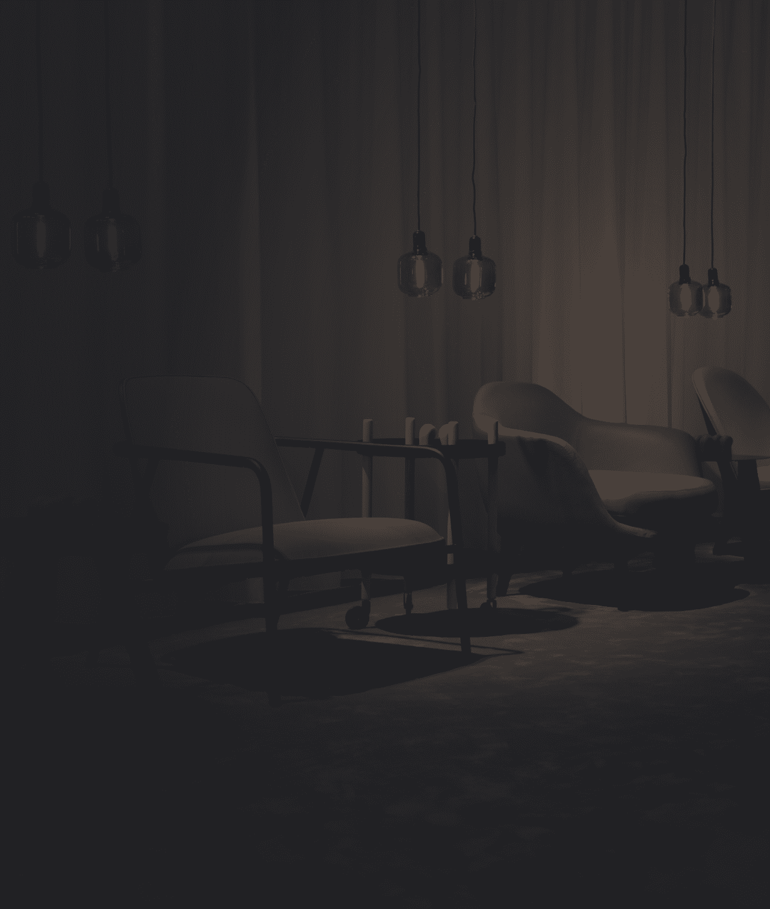
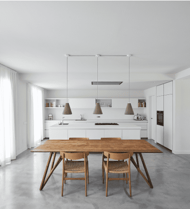
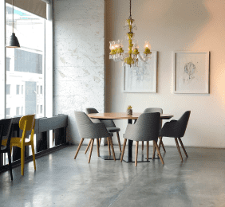

О компании

Наша команда знає світло зовні та всередині, впорається із найскладнійшими світловими рішеннями та реалізує всі Ваші індивідуальні проекти.-Marie Bernmen CEO
Бренд ESTE був створений понад 7 років тому і є одним із лідерів виробництва та продажу
декоративного освітлення на українському та європейському ринках. У пошуках форм і матеріалів ми
вибираємо міцні світильники, як класичні, так і сучасні, які перетворюють будь-який простір на
щось особливе.
ESTE підтримує актуальний асортимент та постійно розширює модельний ряд своєї продукції, уважно
ставиться до кожного етапу свого ланцюжка поставок.

